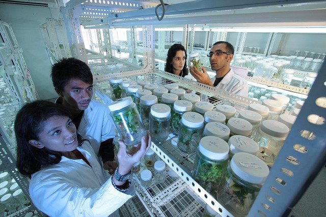

学部紹介
政治経済学部
政治・経済・法律といった社会科学を軸としたカリキュラムで構成される本学部では、ビジネスを読み解く力を磨き、またグローバルな視点をもって社会や組織の抱える課題を分析・解決するための論理的思考力・課題解決力を養います。

商学部
商学・経営学・会計学・マーケティング論・英語を実践的に学び、現代社会の多様なビジネスシーンで対応するための独創的思考力や企画立案力・英語力を身に付け国際社会でも活躍できる人材を育成します。
理学部
生物学・化学・物理学といった自然科学を礎として、本学部では自然や数理の法則・体系を理解するための多数の演習・研究科目を用意し、医学・農学・工学等の分野で活躍できる人材を育成します。

コンピュータサイエンス学部
日々進化し続けるIT技術の中でも、近年特に注目を集めているAIやIoT・VRといった最先端のICT実学を本格的に学び、Phythonをはじめとしたプログラミングをベースに幅広い分野で、そして世界のIT市場で活躍できるスキルを養成します。